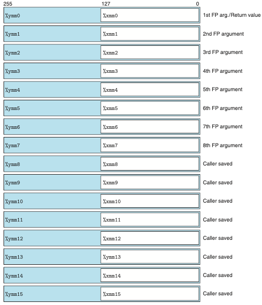
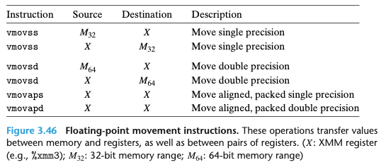
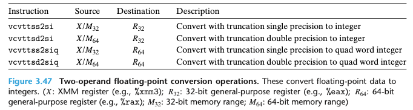
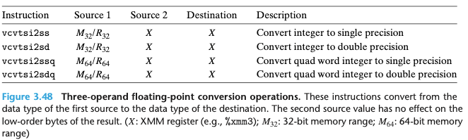
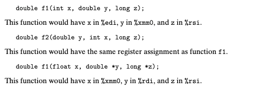
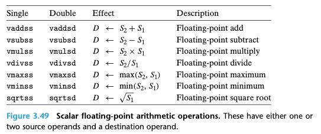
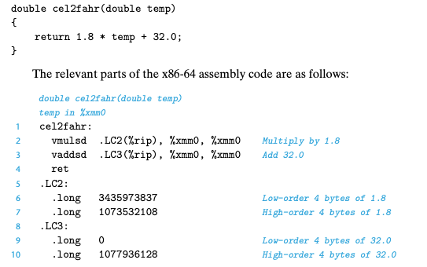
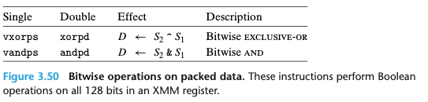
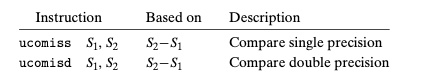

Chapter 03. 프로그램의 기계수준 표현
- 3.1 역사적 관점
- 3.2 프로그램의 인코딩
- 3.3 데이터의 형식
- 3.4 정보 접근하기
- 3.5 산술연산과 논리연산
- 3.6 제어문
- 3.7 프로시져
- 3.8 배열의 할당과 접근
- 3.9 이기종 자료구조
- 3.10 기계수준 프로그램에서 제어와 데이터의 결합
- 3.11 부동소수점 코드
- 3.12 요약
3.11 부동소수점 코드
- 프로세서의 부동소수점 아키텍처는 부동소수점 데이터로 연산하는 방법이 기계에 매피되는 방법에 영향을 주는 다음과 같은 여러 가지 개념들로 구성된다.
- 부동소수점 값들이 저장되고 접근되는 방법
- 이것은 대개 레지스터들의 일부 형태로 이뤄진다.
- 부동소수점 데이터로 연산하는 인스트럭션
- 함수들의 인자와 리턴 값으로 부동소수점 값들을 전달하기 위해 이용되는 관례들
- 함수를 호출하는 동안에 레지스터들을 보존하는 관례들
- 부동소수점 값들이 저장되고 접근되는 방법
- x86-64 부동소수점 아키텍처를 이해하기 위해선 간략한 역사적 고찰을 해보는 것이 유용하다.
- 1997년에 펜티엄/MMX를 발표한 이래, 인텔과 AMD는 그래픽과 영상처리를 지원하기 위해 일련의 미디어 인스트럭션 세대들을 포함해왔다.
- 이들에 대한 확장현태가 진행되었고 MMX로부터 SSE, AVX로 개선되어갔다.
- AVX 부동소수점 아키텍처는 %ymm0-%ymm15로 이름 붙인 16개의 YMM 레지스터들에 저장된다.
- 스칼라 데이터로 연산할 때, 이 레지스터들은 부동소수점 데이터만을 보관하며, 하위 32비트(float), 64비트(double)만이 사용된다.

3.11.1 부동소수점 이동 및 변환 연산
- XMM 레지스터에서 다른 레지스터로 이동하는 것뿐만 아니라 메모리와 XMM 레지스터들 간의 부동소수점 데이터를 이동하는 인스트럭션들을 보여준다.
- 메모리를 참조하는 인스트럭션들은 스칼라 인스트럭션들이다.
- 이것은 이들이 묶인 데이터 값들이 아닌 개별 값들에 대해 연산한다는 것을 의미한다.
- GCC는 데이터를 메모리에서 XMM 레지스터로,또는 XMM 레지스터에서 메모리로 이동하기 위해서만 스칼라 이동연산을 이용한다.
-
두 개의 XMM 레지스터들 간의 데이터 이동을 위해서는 한 개의 XMM 레지스터의 내용 전체를 다른 레지스터로 복사하기 위해 두 개의 인스트럭션 중 하나를 이용한다.
- 아래의 그림은 부동소수점 이동 명령. 이 연산들은 레지스터들 간, 레지스터와 메모리 간에 값을 이동한다.

- 아래의 그림은 두 개의 오퍼랜드를 갖는 부동소수점 변환 연산. 이들은 부동소수점 데이터를 정수로 변환한다.

- 아래의 그림은 세 개의 오퍼랜드를 갖는 부동소수점 변환 연산. 이들은 첫번째 소스의 자료형으로부터 목적지의 자료형으로 변환한다. 두번째 소스 값은 결과의 하위 바이트에는 영향을 주지 않는다.

3.11.2 프로시저에서 부동소수점 코드
- XMM 레지스터들이 함수로 부동소수점 인자를 전송하고 부동소수점 값들을 리턴할 때 사용된다.
- 최대 여덟 개의 부동소수점 인자들이 %xmm0-%xmm7 XMM 레지스터들로 전달될 수 있다.
- 한개의 부동소수점 값을 리턴하는 함수는 레지스터 %xmm0를 이용한다.
- 모든 XMM 레지스터들은 호출자 저장방식이다.
- 어떤 함수가 포인터, 정수, 부동소수점 인자들의 조합을 가지고 있을 때, 포인터와 정수들은 범용 레지스터로 전달되지만, 부동소수점 값들은 XMM 레지스터들로 전달된다.

3.11.3 부동소수점 산술연산
- 스칼라 부동소수점 산술연산. 이 인스트럭션들은 한 개 또는 두 개의 소스 오퍼랜드와 하나의 목적지 오퍼랜드를 갖는다.
- 첫번빼 소스 오퍼랜드 S1은 XMM 레지스터나 메모리 위치일 수 있다.
- 두번째 소스 오퍼랜드와 목적지 오퍼랜드는 XMM 레지스터만 가능하다.

3.11.4 부동소수점 상수의 정의 및 이용
- AVX 부동소수점 연산은 즉시값immediate value을 오퍼랜드로 가질 수 없다.
- 그 대신, 컴파일러는 상수 값들을 위해 저장공간을 할당하고 초기화해야 한다.
-
그리고 나서 코드는 메모리에서 값들을 읽어들인다.
- 아래의 그림을 보면 값 1.8을 .LC2로 명명된 메모리 위치에서 읽어들이고, 32.0을 메모리 위치 .LC3에서 읽어들이는 것을 알 수 있다.

3.11.5 부동소수점 코드에서 비트연산 사용하기
- 아래의 그림은 통합데이터에 대한 비트 연산이다. 이 인스트럭션들은 XMM 레지스터에 들어 있는 128비트들에 대한 부울연산을 수행한다.

3.11.6 부동소수점 비교 연산
- AVX2는 부동소수점 값들을 비교하기 위해 두 개의 인스트럭션을 제공한다.

- 부동소수점 비교 인스트럭션은 세 개의 조건코드를 설정한다: zero 영 플래그 ZF, 캐리 플래그 CF, 패리티 플래그 PF
- 패리티 플래그는 가장 최근 산술 또는 논리연산이 최소중요바이트를 짝수 패리티를 갖는 값을 생성했을 때 설정된다.
패리티 플래그 무슨소린지 하나도 모르겠다… 이건 좀더 조사해보자!
- 패리티 플래그는 가장 최근 산술 또는 논리연산이 최소중요바이트를 짝수 패리티를 갖는 값을 생성했을 때 설정된다.
3.11.7 부동소수점 코드에 대한 관찰
- AVX2로 부동소수점 데이터에 대해 연산하기 위해 생성된 머신코드의 일반적인 스타일이 정수데이터에 연산하는 경우에 대해 살펴본 것과 유사하다는 것을 알았다.
- 이 둘은 모두 값을 보관하고 연산하기 위해 레지스터들을 사용하며, 이들은 이 레지스터를 사용해서 함수의 인자를 전달한다.
3.12 요약
- 이 장에서는 기계어 수준 프로그래밍의 시각을 얻기 위해 C언어에서 제공하는 추상화 계층 아래를 살펴보았다.
-
컴파일러가 기계어 수준 프로그램의 어셈블리 코드 표현을 생성하게 해서 프로세서, 자료형, 인스트럭션 집합과 함께 컴파일러와 컴파일러의 최적화 능력에 대한 통찰을 얻을 수 있었다.
- 기계어 수준 프로그램들과 이들의 어셈블리 코드 표시는 C 프로그램들과는 여러모로 다른다.
- 서로 다른 자료형들 사이에 차이는 거의 없다.
- 프로그램은 인스트럭션들의 연속으로 표시되고, 각각은 한 개의 연산을 수행한다.
- 컴파일러는 여러 가지 자료구조를 생성하고 처리하기 위해서, 조건문, 루프, 프로시저 같은 제어문을 구현하기 위해서 다수의 인스트럭션들을 사용해야 한다.
-
C에서 경계 값을 체크하지 않기 때문에 많은 프로그램들이 버퍼 오버플로우의 위험에 놓인다는 것을 알게 되었다.
- 자바는 ‘자바 바이트 코드’라고 알려진 특별한 이진 표현이다.
Chapter3 또한 부동소수점을 마지막으로 마무리 하였다. 기계어 표현인 어셈블리어에 대한 내용이 한가득 있었던 챕터였다. 간단한 이동과 연산부터 배열, 조건문, 프로시저, 부동소수점 까지의 기계어 인스트럭션들을 살펴보았고, 이러한 인스트럭션을 통해서 컴퓨터는 연산 명령을 받게 된다. 이해하기 어려운 기계어는 실제로 C언어를 기계어 단계에서 디버깅 하면서 이해를 도왔다. <- 이부분이 이해가 직관적으로 되어서 참 좋았다. Chapter2~3은 Chapter4의 빌드업이라고도 한다. 확실히 이해하고 Chapter 4로 넘어가자!